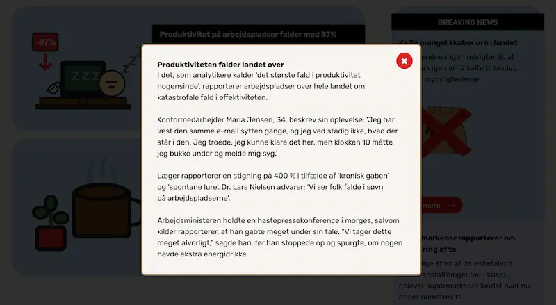
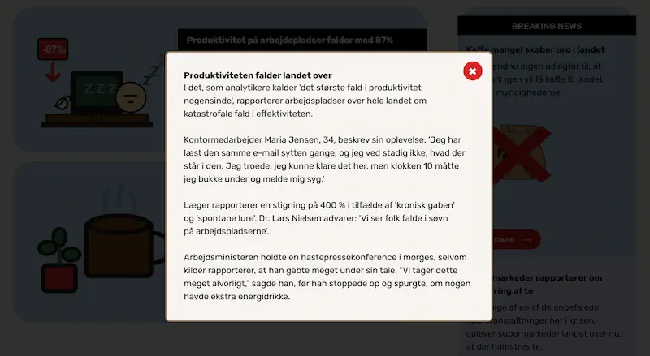

Min portfolio
På denne side præsenteres projekter fra mit 1. semester på multimediedesign. Projekterne er opdelt i temaer og indeholder en beskrivelse af løsning, proces og læring.
Tema 2 – Grundlæggende web
Jeg arbejdede og lærte i tema 2 gennem opgaverne Mobilsite og Studiestartsprøven. Opgaverne tog udgangspunkt i det samme udleverede indhold og havde fokus på HTML-struktur, semantik, layout og responsiv opbygning. Mobilsite fungerede som en første, simpel kodning af indholdet, mens studiestartsprøven byggede videre på dette med fokus på layoutdiagrammer, grid og struktur.
Mobilsite & studiestartsprøven
Løsning
Studiestartprøven blev den endelige løsning, og er et responsivt website kodet i HTML og CSS, opbygget ud fra udleverede wireframes og layoutdiagrammer. Sitet er struktureret med semantisk HTML og layoutet ved hjælp af CSS grid og flexbox. Der er lagt vægt på en klar visuel struktur, overskuelig navigation og et layout, der tilpasser sig forskellige skærmstørrelser, så det både er desktop og mobilvenligt.
Proces
Processen bestod primært i at omsætte det udleverede materiale og
wireframes til fungerende kode. Jeg startede med at analysere
strukturen i de givne diagrammer og opbyggede herefter
HTML-strukturen. I den første Mobilsite opgave, havde jeg primært
fokus på strukturen, samt at opsætte det pænt på det færdige
website, ved brug af CSS. Fokus her var margin og padding, samt
tilføjelse af fonte og farver i sitet, så det var et pænt og
velfungerende website.
Til Studiestartprøven arbejdede jeg videre på sitet, ud fra givne
wireframes og layoutdiagrammer. Jeg arbejdede med CSS grid og
flexbox for at genskabe layoutet så præcist som muligt og anvendte
media queries for at sikre responsivitet. Undervejs testede jeg
løbende layout og struktur i browseren.
Læring
Gennem opgaven har jeg opnået en grundlæggende forståelse for,
hvordan wireframes og layoutdiagrammer kan omsættes til kode ved
hjælp af HTML og CSS.
Jeg har lært at arbejde struktureret med
semantisk markup, grid og flexbox, samt vigtigheden af en klar
mappestruktur til sit arbejde med materiale og i VScode. Derudover
har opgaven givet mig erfaring med at følge konkrete givne krav og
layouts, hvilket er en vigtig kompetence i professionel
webudvikling.
Tema 3 – Grundlæggende UX/UI
I dette tema arbejdede jeg med grundlæggende UX/UI-design med fokus på brugerforståelse, research og designprocesser. Jeg lavede opgaven Emnesite, som bestod i at udvikle et emnesite med et selvvalgt tema, hvor hele processen fra idé og research til færdigt website, tog udgangspunkt i metoder og teorier inden for user experience design. Temaet gav mig mulighed for at arbejde mere kreativt og brugerorienteret med digitale løsninger.
Emnesite
Løsning
Løsningen er et emnesite udviklet ud fra et selvvalgt tema, som tog
afsæt i mine egne interesser. Mit site blev derfor med temaet
elektronisk musik og den scene i København.
Websitet er designet med fokus på klare UX/UI-konventioner,
overskuelig struktur og en sammenhængende visuel stil. Jeg udarbejdede
prototyper i Figma for desktop og mobil, og implementerede løsningen i
HTML og CSS, hvor der blev lagt vægt på responsivt design, tydelig
navigation og en god brugeroplevelse på tværs af enheder.
Proces
Processen startede med idéudvikling og research, hvor jeg gennem
brainstorms, inspirationssøgning og målgruppeovervejelser, fandt
frem til et relevant emne.
Jeg brugte her særligt desk research, for at se hvad der fungerer
godt hos konkurrent sider, og dette blev også inkluderet i en
lightning demo, hvor jeg fandt videre inspiration.
I mine målgruppeovervejelser var især mit interview, med en i
målgruppen, meget brugbart og indsigtsrigt. En Likert test var også
meget brugbart, i min idéudvikling af designet for min side. I
testen præsenterede jeg forskellige moodboards og styletiles, og
resultatet af denne hjalp til den endelige beslutning.
Herefter arbejdede jeg med UX-metoder som user stories, wireframes
og mock-ups for at strukturere indhold og funktionalitet.
Jeg lavede desktop og mobil prototyper, som jeg undervejs testede
ved hjælp af en brugertest, 5-sekunders testen, for at få indsigt i
brugerens oplevelse og forståelse af sitet.
På baggrund af
testresultaterne justerede jeg layout og indhold, inden den endelige
løsning blev kodet.
Inden kodning af websitet lavede jeg layoutdiagrammer, ud fra mine
prototyper, for først at få et overblik over strukturen.
Læring
Gennem opgaven har jeg opnået en grundlæggende forståelse for
UX/UI-processen og betydningen af at basere designbeslutninger på
brugerindsigter.
Jeg har lært at arbejde struktureret med research, idéudvikling og
tests, samt at formidle min proces og mine valg tydeligt. Derudover
har jeg styrket mine færdigheder i Figma og fået erfaring med at
omsætte digitale prototyper til fungerende websites i HTML og CSS,
med fokus på brugervenlighed og sammenhæng mellem design og
funktion.
Jeg lærte igen, hvordan layoutdiagrammer kan være en stor hjælp til
at skabe et overblik, inden kodning af et site.
Tema 4 – Grundlæggende brugergrænseudvikling
I dette tema arbejdede jeg med udvikling af brugergrænseflader med fokus på visuelt design, interaktion og funktionalitet. Temaet byggede videre på tidligere læring og introducerede nye værktøjer og teknologier som Adobe Illustrator, SVG-grafik og JavaScript. Formålet var at udvikle vores Temaopgave, et mere visuelt og interaktivt website, hvor både design og funktionalitet spiller sammen.
Temaopgave
Løsning
Løsningen er et interaktivt website, hvor brugergrænsefladen er udviklet med fokus på visuelle UI-elementer, animationer og funktionalitet. Jeg designede grafiske elementer og illustrationer i Adobe Illustrator og implementerede dem som SVG’er på sitet. Websitet er bygget med HTML og CSS og indeholder JavaScript til at håndtere interaktioner og dynamiske elementer. Der er arbejdet med CSS-transitions, custom properties og simple JavaScript-funktioner for at skabe en mere levende og brugervenlig oplevelse.
 

Proces
Processen startede med idéudvikling og visuel inspiration, hvor jeg
arbejdede med skitser på papir, moodboards og style tiles for at
fastlægge det visuelle udtryk.
Herefter udviklede jeg UI-elementer, figurer og grafik i Adobe
Illustrator med fokus på form, farver og komposition. Undervejs blev
designet løbende implementeret i kode, hvor jeg arbejdede med CSS og
JavaScript, for at omsætte det visuelle koncept til en fungerende
digital løsning. Jeg testede funktionaliteten i browseren og
justerede både design og interaktioner løbende.
Læring
Gennem temaet har jeg opnået en grundlæggende forståelse for
samspillet mellem visuelt design og frontend-udvikling. Jeg har lært
at arbejde med vektorgrafik i SVG-format og integrere
Illustrator-design direkte i mine website projekter. Derudover har
jeg fået en introduktion til JavaScript og lært at bruge simple
funktioner, til at skabe interaktive elementer.
Temaet har styrket mine kompetencer inden for UI-design, CSS og
frontend-logik samt givet mig en bedre forståelse for, hvordan
design og funktionalitet tilsammen skaber en god brugeroplevelse.
Tema 5 – Grundlæggende indhold
I dette tema arbejdede jeg med grundlæggende indholdsproduktion og redesign af et virksomhedssite. Temaet havde fokus på hele processen og samlede både design, indhold og frontend-udvikling. Der blev arbejdet med fotografering, billedbehandling, og redesign af en eksisterende virksomheds hjemmeside.
Virksomhedssite
Løsning
Løsningen er et redesign af en eksisterende virksomheds hjemmeside, hvor både visuelt udtryk, indhold og struktur er blevet gentænkt. Sammen med min gruppe producerede jeg nyt indhold i form af tekst, fotos og visuelle elementer, som understøtter virksomhedens identitet og målgruppe. Der er arbejdet med performance og kvalitetssikring ved hjælp af Lighthouse, samt med hensyn til ophavsret og billedbrug.
Proces
Processen startede med research og analyse af virksomheden, herunder
målgruppe, brugertyper og det eksisterende website.
Vores videre research baserede sig også på konkurrent sider, for at
få en forståelse af, hvad der generelt fungerer godt på frisør
virksomhedssider, samt hvad vores målgruppe forventer og har brug
for.
På baggrund af dette udarbejdede vi moodboard, styletile, og
wireframes, som dannede grundlag for redesignets struktur, visuelle
udtryk og indhold.
Selve produktionen bestod af fotografering med smartphone og
billedbehandling i Photoshop, samt kodning af vores website.
I postproduktionen blev indholdet optimeret og implementeret på
websitet, og løsningen blev testet.
Arbejdet blev udført i grupper, hvilket gav erfaring med samarbejde,
koordinering og fælles beslutningstagning i en design- og
udviklingsproces, samt hvordan et fælles repository sættes op i
GitHub og kodes i hver sin VScode.
Læring
Gennem temaet har jeg opnået en grundlæggende forståelse for
indholdsproduktion i en digital kontekst og lært at arbejde
struktureret med både præproduktion, produktion og
postproduktion.
Jeg har fået erfaring med at producere og optimere billeder og tekst
med fokus på målgruppe, brugeroplevelse og performance. Derudover
har temaet styrket mine kompetencer i redesign af eksisterende
websites og givet mig indsigt i, hvordan indhold, design og teknik
skal spille sammen for at skabe en sammenhængende og professionel
digital løsning.
Jeg har også opnået erfaring med gruppearbejde, formidling og
dokumentation af proces og løsning.